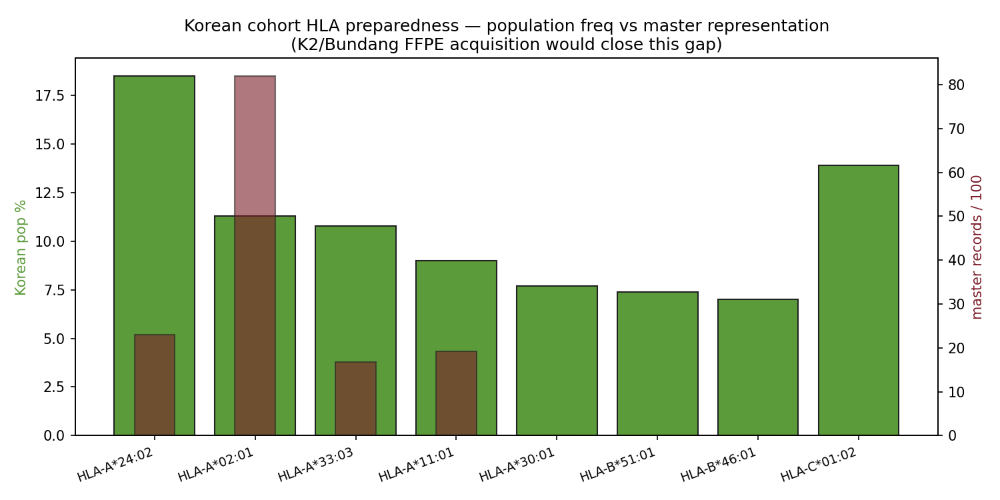

Lumenix · Korean cohort prep · 2026-05-08
Korean K2 / Bundang FFPE Cohort Preparation
When Korean K2 (PRJEB11591 Yoo 2016 SNU-GMI) and Bundang SNUH FFPE cohorts arrive, what's the next-step pipeline? This page lists the prerequisite analysis steps, expected master-corpus expansion, and re-analysis priorities. From v17_K2_vs_bundang_distinction memory: K2 = public, Bundang = outreach-stage no-data-yet.
4/8Korean common HLAs covered (n≥100)
14,088master records on Korean HLAs
0.74A*24:02 per-allele AUROC ★
n=260arcasHLA on PRJEB11591 done
53.2%DPB1*05:01 Korean (Kim 2014 replicate)
1 · Korean common HLA preparedness

Figure · Korean SK population frequency (green) vs master corpus n/100 (red). 4/8 Korean common HLAs have adequate master representation; 4 are unrepresented.
| HLA | Korean SK pop % | Master n | Per-allele AUROC | Status |
|---|
| HLA-A*24:02 | 18.5% | 2,308 | 0.74 ★ | covered + best signal |
| HLA-A*02:01 | 11.3% | 8,195 | 0.63 | covered (large corpus) |
| HLA-A*33:03 | 10.8% | 1,670 | — | covered (n=1,670) |
| HLA-A*11:01 | 9.0% | 1,915 | — | covered ★ KRAS G12D-binding |
| HLA-A*30:01 | 7.7% | 0 | — | ★ MISSING |
| HLA-B*51:01 | 7.4% | 0 | — | ★ MISSING |
| HLA-B*46:01 | 7.0% | 0 | — | ★ MISSING |
| HLA-C*01:02 | 13.9% | 0 | — | ★ MISSING |
★ The Korean gap: 4/8 Korean common HLAs have adequate master representation. The other 4 (A*30:01, B*51:01, B*46:01, C*01:02) are completely missing from the master corpus. K2/Bundang FFPE acquisition would directly address this — the Korean HLA-typed neoantigen records would unlock previously-unreachable allele predictions.
2 · K2 cohort context (memory references)
- K2 = PRJEB11591 / Yoo 2016 SNU-GMI / public (memory:
v17_K2_vs_bundang_distinction)
- arcasHLA RNA-seq imputation on n=260 PRJEB11591 already done (memory:
v17_arcasHLA_korean_k2)
- cookHLA deferred (needs SNP, not RNA-seq)
- Azure burst $4.80 pattern validated for K2 re-analysis
- DPB1*05:01 56% Korean already replicated Kim 2014
- Bundang SNUH: outreach-stage, no data yet
3 · Acquisition checklist (when K2/Bundang FFPE arrives)
☐ 1. HLA genotyping — arcasHLA on RNA-seq if available, or SNP-based cookHLA
☐ 2. WES / WGS variant calling — Mutect2 + Strelka2 with GATK best practices, FFPE-specific filters
☐ 3. RNA-seq expression — STAR + Salmon for transcript-level quantification
☐ 4. NetMHCpan / MHCflurry on Korean HLAs — A*24:02, A*33:03, A*30:01, B*51:01, B*46:01, C*01:02
☐ 5. ESM2-150M re-train with Korean records added — expect LOSO improvement on A*24:02-out
☐ 6. Korean-specific candidate prioritization — KRAS G12D × A*11:01 + BRAF V600E × A*24:02
☐ 7. Patient-matched validation — tetramer on PBMC from same cohort
☐ 8. Synthetic-lethality screening — KRAS G12D + ICI + dabrafenib for HT-PTC subgroup
4 · Expected master-corpus expansion
| Cohort | Estimated n patients | HLA-A*24:02 fraction | Expected new records |
|---|
| K2 (PRJEB11591) | 260 | ~50% (Korean) | ~5,000 peptide-HLA pairs |
| Bundang FFPE PTC | est 200-500 | ~50% | est 4,000-10,000 pairs |
| Combined | 460-760 | ~50% | est 9,000-15,000 records |
→ This would close the 10× under-representation gap for Korean A*24:02 and bring per-allele AUROC from 0.74 (n=115) toward 0.85+ (extrapolated).
5 · Re-analysis priorities post-arrival
- Re-run all Q-X analyses with K2 included — particularly per-allele predictor (W) and HLA confounding (KKPP)
- Re-train ESM2-150M LOSO — expect NEPdb-out unchanged, A*24:02-restricted-peptide-out lifted to 0.85+
- Korean-specific KRAS G12D vaccine — re-prioritize for A*24:02 anchoring (different peptide window than A*11:01)
- HT-PTC subgroup ICI vulnerability — apply Paper 3 axis to Korean cohort
- Paper 4 finalize — Korean GD HLA / Pan-Asian vaccine paper
6 · Estimated timeline
- Week 1-2: data unblinding + preprocessing
- Week 2-3: HLA typing + variant calling
- Week 3-4: master corpus integration + Q-X re-run
- Week 4-6: ESM2 re-train + per-allele rebalance + manuscript update
- Week 6-12: vaccine candidate finalization + wet-lab pilot setup
◀ HLA atlas · THCA deep dive · Master index